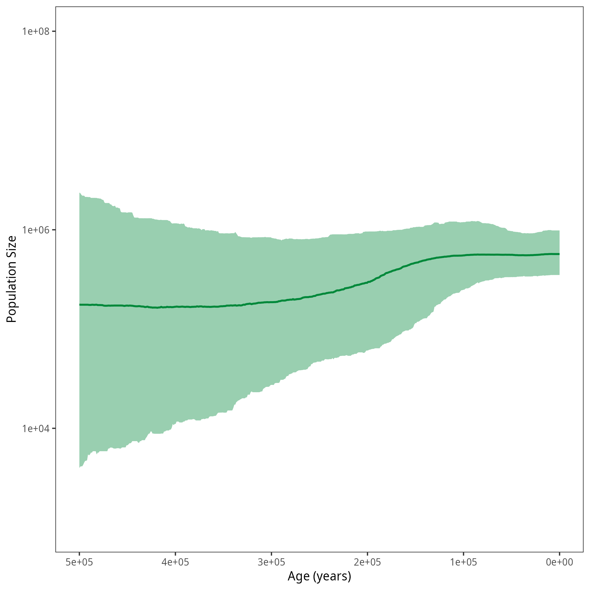

This tutorial describes how to run a Coaelescent Skyline Analysis with the Skyfish model in RevBayes.
The most notable difference to the previous exercise is that the number of intervals is estimated in the analysis.
In the Skyfish model, we use a compound poisson process (CPP) prior with a poisson prior on the number of interval change-points, a uniform prior on the position of the change-points, and an autocorrelated lognormal prior on the population size.
In this case, a reversible jump MCMC (rjMCMC) is needed to be able to sample from the posterior distribution.
In RevBayes, this functionality is implemented in the dnAutocorrelatedEvent distribution.
For your info
The entire process of the Skyfish estimation can be executed by using the mcmc_isochronous_SkyfishAC.Rev script in the scripts folder. You can type the following command into
RevBayes:source("scripts/mcmc_isochronous_SkyfishAC.Rev")We will walk you through the script in the following section.
We will mainly highlight the parts of the script that change compared to the GMRF model.
Read in the data as described in the first exercise.
For the Skyfish model, you need to set a maximal age. Here, we define the maximal age to be $500000$ which should cover the whole tree (based on our results from the previous exercises). Further backwards in time the population size is thought to be in equilibrium and to be equal to the population size of the most ancient interval. The first interval (automatically) starts at $t = 0$, the other starting points depend on the number of intervals and the maximal age.
MAX_AGE = 500000
We also need to set an estimated root age which will be used for the initialization of the population size values.
ESTIMATED_ROOT_AGE <- 375000
EXPECTED_POP_SIZE = ESTIMATED_ROOT_AGE/2
We need some additional parameters for the analysis to work.
H is a parameter governing the standard deviation of the population size (see below).
It is chosen so that $95\%$ of the prior probability span two orders of magnitude (see Höhna et al. (2017) for more details).
ac_sigma defines the standard deviation of the autocorrelation.
We draw it from an exponential distribution with rate MAX_AGE / 8.
H = 0.587405
ac_sigma ~ dnExponential( 0.25 * MAX_AGE / 2 )
ac_sigma.setValue( 1.0 / MAX_AGE )
We add a scaling move for ac_sigma.
moves.append( mvScale(ac_sigma, weight=2) )
In the next step, we set up the dnAutocorrelatedEvent distribution which combines population sizes, the position of interval change-points, and the number of change-points in a single distribution.
For the eventDistribution parameter, a distribution on natural numbers has to be chosen.
These “events” are the number of change-points seperating intervals in this case and not coalescent events.
In this example, we use a Poisson distribution with an expected value of $10$.
The valueDistribution is a vector of prior distributions for the population sizes and the interval times.
We chose a uniform distribution for the positioning of interval change-points.
For the first population size, we chose a lognormal distribution based on the expected population size and a standard deviation of 2*H.
We also should call the variables by their names.
The minNumberEvents are $1$ population size and $0$ times corresponding to interval changes.
We expect to always have one more population size value than change-points.
For autocorrelationTypes we set the population size to be autocorrelated through a lognormal distribution (ACLN).
The autocorrelation of the population size should be time-dependent, thus we need to set the second value of the autocorrelationDependencies to "time".
Finally, autocorrelation of the population size is governed by it standard deviation defined by the ac_sigma parameter.
The interval change-points are not autocorrelated, thus we set the respective values to "NONE", "none", and $0$.
In the last line, we add the name of the variable to sort the values of all parameters by.
In our case, we want the population size values to be sorted by time.
events ~ dnAutocorrelatedEvent(eventDistribution = dnPoisson(lambda=10),
valueDistribution =[dnUniform(0.0,MAX_AGE),
dnLognormal( ln(EXPECTED_POP_SIZE), sd=2*H )],
names=["time","theta"],
minNumberEvents=[0,1],
autocorrelationTypes=["NONE","ACLN"],
autocorrelationDependencies=["none","time"],
autocorrelationSigmas=[0,ac_sigma],
sort = "time")
For the dnAutocorrelatedEvent distribution, we add specific moves.
# apply a move that adds and removes pairs of theta+time
moves.append( mvMultiValueEventBirthDeath(events, weight=50) )
# add a move that changes the theta variables
moves.append( mvMultiValueEventScale(events, name="theta", lambda=1.0, weight=10, tune=!FALSE) )
moves.append( mvMultiValueEventSlide(events, name="theta", lambda=1.0, weight=10, tune=!FALSE) )
# add a move that changes the time variables
moves.append( mvMultiValueEventSlide(events, name="time", lambda=10.0, weight=10, tune=!FALSE) )
moves.append( mvMultiValueEventScale(events, name="time", lambda=0.5, weight=10, tune=!FALSE) )
Finally, we need to track the different parameters by assigning them to variables.
n_events := events.getNumberOfEvents()
population_size := events.getRealPosValues(name="theta")
changePoints := events.getRealPosValues(name="time")
Now, we will instantiate the stochastic node for the tree.
psi ~ dnCoalescentSkyline(theta=population_size, times=changePoints, method="specified", taxa=taxa)
In our example, we realized that it is difficult to find a starting tree with this model. We just set the maximum a posteriori (MAP) tree of the analysis with the Constant model as our starting tree.
trees = readTreeTrace("output/horses_iso_Constant.trees", treetype = "clock", burnin = 0.1)
maptree = mapTree(trace=trees)
psi.setValue( maptree )
root_age := psi.rootAge()
For consistency with the other exercises, we set the interval_times to be the changePoints variable that we declared above.
You might as well omit this line, but then track the changePoints in your MCMC monitors.
interval_times := changePoints
Again, we constrain the root age as before and add the same moves for the tree.
This part is taken from the previous exercises.
In the end, we need to wrap our model as before.
Finally, we add the monitors and then run the MCMC. Remember to change the file names to avoid overwriting your previous results.
monitors.append( mnModel(filename="output/horses_iso_SkyfishAC.log",printgen=THINNING) )
monitors.append( mnFile(filename="output/horses_iso_SkyfishAC_nevents.log",n_events,printgen=THINNING) )
monitors.append( mnFile(filename="output/horses_iso_SkyfishAC.trees",psi,printgen=THINNING) )
monitors.append( mnFile(filename="output/horses_iso_SkyfishAC_NEs.log",population_size,printgen=THINNING) )
monitors.append( mnFile(filename="output/horses_iso_SkyfishAC_times.log",interval_times,printgen=THINNING) )
monitors.append( mnScreen(n_events, root_age, printgen=100) )
mymcmc = mcmc(mymodel, monitors, moves, nruns=NUM_REPLICATES, combine="mixed")
mymcmc.burnin(NUM_MCMC_ITERATIONS*0.1,100)
mymcmc.run(NUM_MCMC_ITERATIONS, tuning = 100)
After running your analysis, you can plot the results using the R package RevGadgets.
library(RevGadgets)
burnin = 0.1
probs = c(0.025, 0.975)
summary = "median"
num_grid_points = 500
max_age_iso = 5e5
min_age = 0
spacing = "equal"
population_size_log = "output/horses_iso_SkyfishAC_NEs.log"
interval_change_points_log = "output/horses_iso_SkyfishAC_times.log"
df <- processPopSizes(population_size_log, interval_change_points_log, burnin = burnin, probs = probs, summary = summary, num_grid_points = num_grid_points, max_age = max_age_iso, min_age = min_age, spacing = spacing)
p <- plotPopSizes(df) + ggplot2::coord_cartesian(ylim = c(1e3, 1e8))
ggplot2::ggsave("figures/horses_iso_SkyfishAC.png", p)

When you are done, have a look at the next exercise.